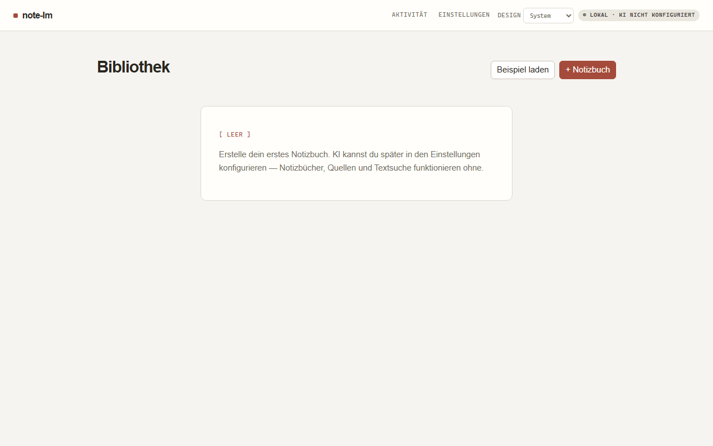
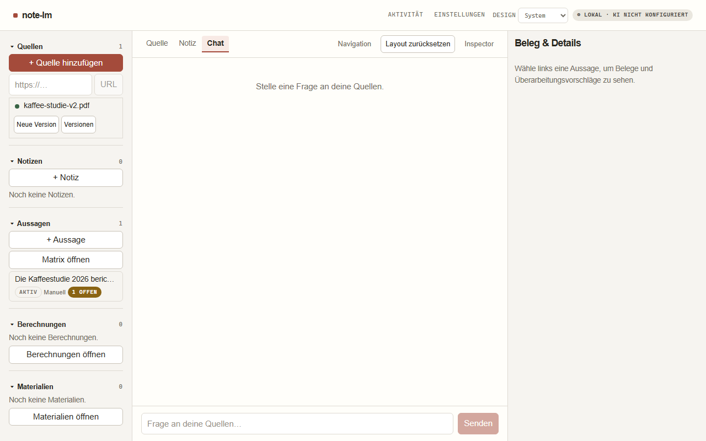
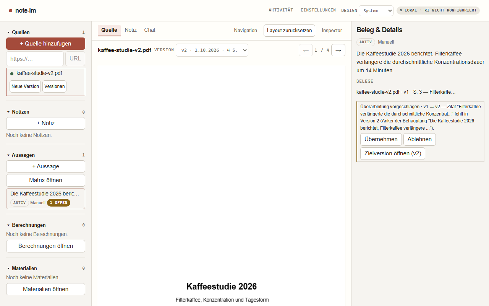

Versioned evidence
Research changes.
Evidence remembers.
Kaffeestudie.pdf
“Der Zinssatz beträgt 3,5 Prozent seit dem Beschluss.”
source · v1Claim anchored to v1
source → v2
01 / Start with a source
Bring the work in.
Open a notebook, import the evidence, and keep it on your computer.

02 / Save the locator
Every claim opens its evidence.

“Der Zinssatz beträgt 3,5 Prozent.”KAFFEESTUDIE.PDF · V1 · S.3
03 / Review the change
Nothing is silently rewritten.

Beleg & Details
The source changed. The recorded claim still points to its original evidence.
Überarbeitung vorgeschlagenEvidence matrix
Claim / source
Kaffee v1
Kaffee v2
Notes
Review
Der Zinssatz beträgt 3,5 Prozent.
anchored
changed
quoted
open
Studie veröffentlicht 2026.
recorded
current
linked
clear
Working hypothesis
—
—
note
clear
note-lm.
Local-first research, with receipts.
NOTE-LM